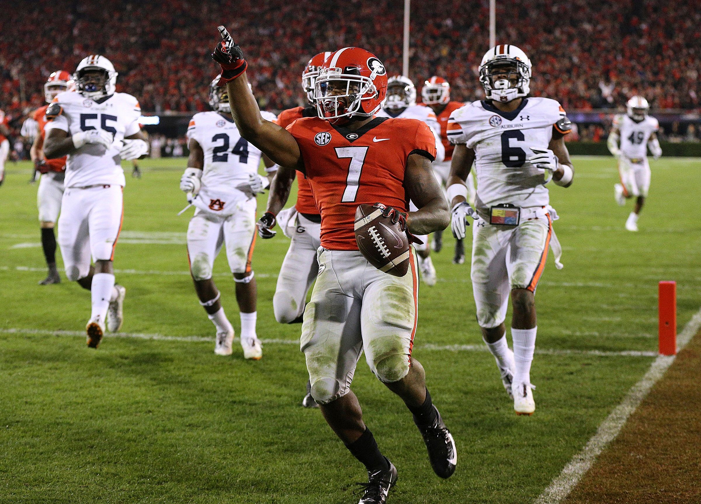

I was born in Atlanta, Ga on November 2, 1998. Ever since then, I have lived in Newnan, Ga, which is a small town right outside of Atlanta. When I was growing up, I had my hobbies. I loved to play outside in the yard with my older brother and all his friends. I also loved to play sports and in particular, baseball. As I grew older, I began to grow more fond of baseball, and decided to focus a lot of my childhood on playing baseball. Also as a kid, I loved to go camping and hiking. My friends and I would often camp out or go on wilderness trips. Above all, throughout my childhood and still today, I love UGA Football.
Ever since my parents started taking me to UGA Football games as a kid, UGA was the only place that I could possibly ever dream about attending. When I was in high school, I focused a lot on my school work because I knew what kind of diligence and excellence that it would require to attend such a prestigious university that is the University of Georgia. As soon as I applied to UGA I already could not wait to know if I had been accepted. Thankfully, I was admitted to UGA and have already completed my first year. I am currently still enrolled at UGA in my sophomore year, and it only gets better. Currently, I have decided to major in accounting, however, things like those are always subject to change.
Although I am still a sophomore in college, I do have many goals that I hope to achieve not only in the next couple of years but more importantly for the rest of my life. I have a big goal that I have set for myself to graduate college with above a 3.5 GPA, and although it may not be easy, I look forward to achieving my goal in the next couple of years. I also have some more long term goals such meeting a wife and starting a family. I also hope that I can continue a family tradition with having season tickets to UGA Football games, as I know both my parents and grandparents will cherish their times at Sanford Stadium forever.
Who is gonna win the SEC Championship?